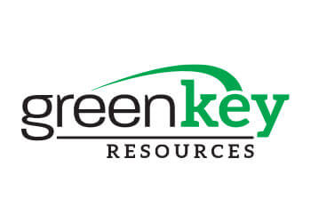

Pittsburgh
Architecture, interiors, engineering, and firm leadership.
Pennsylvania + Ohio
I help architecture and engineering firms hire exceptional people—and help talented professionals find opportunities worth making a move for.
About Lucas
I am fortunate to do work I genuinely enjoy: helping architects, engineers, interior designers, and firm leaders make career and hiring decisions that improve their businesses and their lives.
I live in the Pittsburgh area with my wife—my high school crush—and our two little girls. Family is at the center of everything I do, and it has shaped the way I approach recruiting: with honesty, patience, accountability, and a focus on relationships that last beyond one placement.
My work spans the major metro areas across Pennsylvania and Ohio. I partner with firms of different sizes, cultures, and project portfolios, from growing local studios to nationally recognized organizations.
View my LinkedIn profile and recommendations →The personal side
Husband, father of two, and proud to build my practice in the region where my family and career are rooted.
Markets We Support
We support every major project type in every metro we serve—without limiting firms or candidates to narrow industry silos.
Architecture, interiors, engineering, and firm leadership.
Architecture, MEP, BIM, and technical leadership.
Design, project management, and engineering talent.
Architectural and engineering recruiting across experience levels.
Architecture, interiors, landscape, and visualization.
Project leadership, design, technical, and operational hires.
Architecture and engineering recruiting for growing teams.
Regional and national recruiting support when the right fit extends beyond one city.
Meet Vy
Recruiter | Architecture & Engineering
Vy focuses on recruiting exceptional architecture and engineering professionals across every market we support throughout Pennsylvania and Ohio. She also partners nationally when the right opportunity presents itself.
Together, we provide clients with dedicated business development, market insight, candidate sourcing, process management, and full-cycle recruiting support.

Our Company
Green Key Resources is a national recruiting organization connecting exceptional talent with industry-leading companies. That platform gives our architecture and engineering practice broader reach, stronger resources, and the ability to support clients wherever their hiring needs lead.
Visit Green Key ResourcesHow We Work
We learn the person, firm, culture, goals, and full context before pushing a process forward.
Clear feedback on compensation, competition, candidate motivation, and process risk.
Direct communication and disciplined follow-up from first conversation through acceptance.
Start a Conversation
Let’s have a straightforward conversation about what you need and whether I can help.